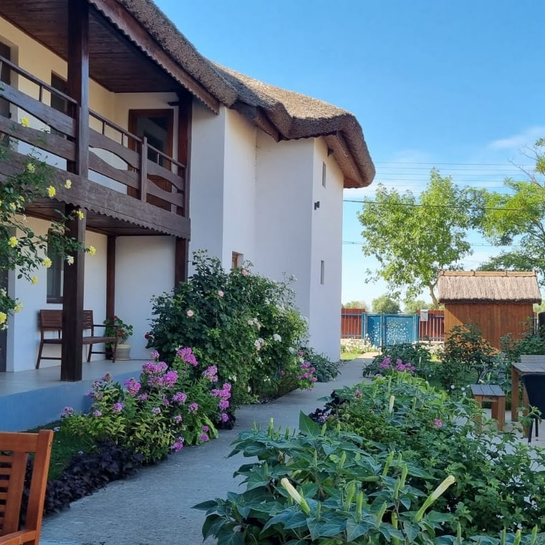
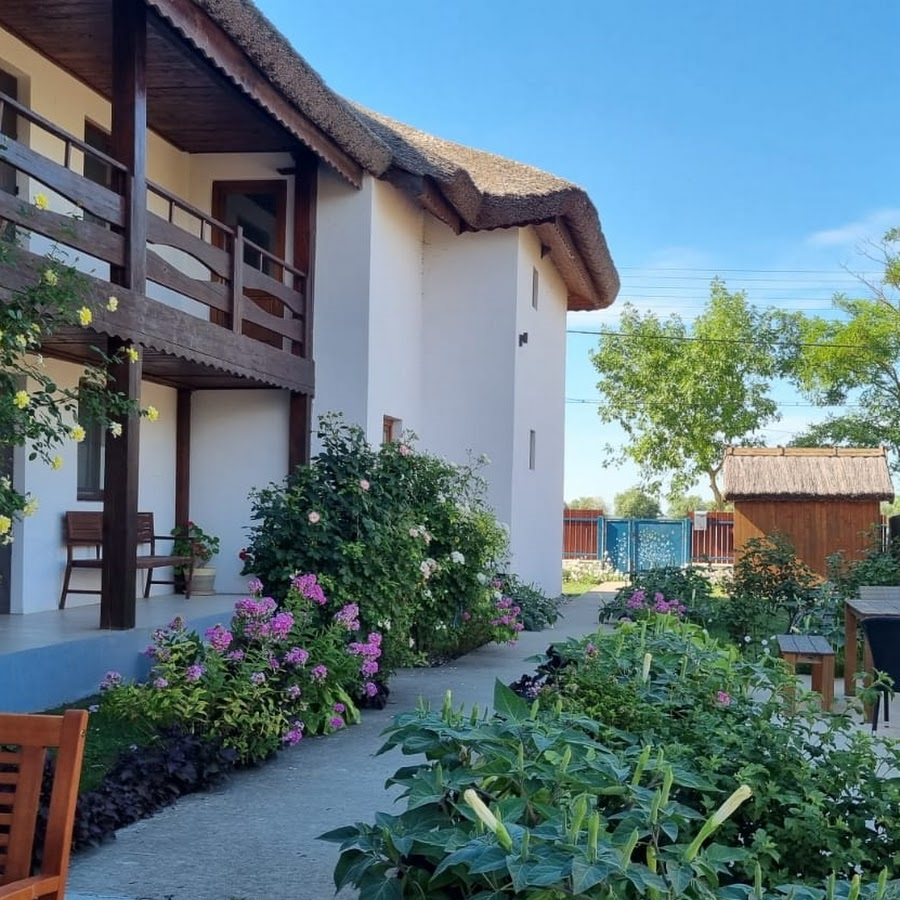
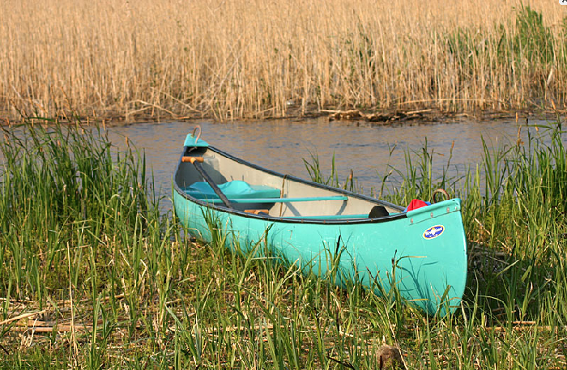

Contact
Contact
Ein charmantes Gästehaus in Crisan im Herzen des Donaudeltas.
Eine Oase der Ruhe, die nur mit dem Boot erreichbar ist.
 

Unsere Aktivitäten in
NATUR

Tagesausflug
Entdecken Sie das Donaudelta mit einem umweltfreundlichen Ansatz. Ausflüge nach Mila 23, Caraorman und Letea.
- Abfahrt jeden Tag
- Professionelle Guides
- 60 euros/pers

Ornithologischer Ausflug
Begeben Sie sich in Begleitung eines professionellen Führers auf eine ornithologische Erkundung des Deltas.
Entdecken Sie alle unsere Angebote!
- Professioneller Vogelführer
- Aufenthalt von 1 bis 10 Tagen
- All-inclusive-Paket

Tierfotografie
Dieses Erlebnis richtet sich an Naturfotografie-Enthusiasten, ab dem Morgengrauen tauchen Sie in die besondere Atmosphäre des Flusses ein.
- Spezialisierter Führer
- Abfahrt im Morgengrauen
- Begrenzte Anzahl von Fotografen pro Boot

Kanuverleih
Wir haben mehrere Routen rund um Crisan, die nicht sehr stark frequentiert sind und es Ihnen ermöglichen, in die Natur einzutauchen.
- Doppel-Kanus
- Für alle Zielgruppen
- 35 euros/kanu